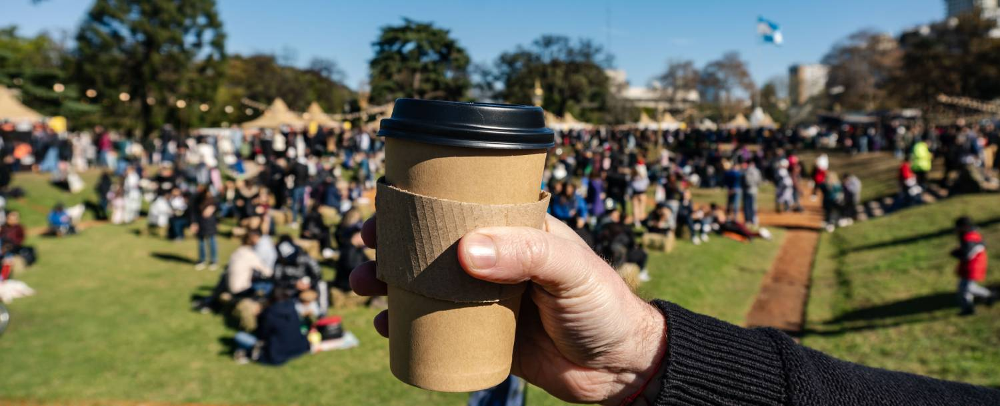

Quiénes están este año
Estos son los puestos que confirmaron para los dos días. Algunos traen la máquina de espresso, otros solo el molino y un par de chemex.
Antes de ir
Un par de cosas que conviene tener en cuenta, sobre todo si es la primera vez que vas a una feria de estas.
- Llevar efectivo. Varios puestos no tienen QR y una taza suele estar entre 4 y 7 mil pesos.
- Si te vas a llevar granos, una bolsa o mochila. Los paquetes de 250 g ocupan más de lo que parece.
- Ir con un poco de hambre no viene mal, hay medialunas y facturas.
- Si hace sol, gorra. En la plaza a mediodía hay poca sombra.
- Preguntá de dónde viene el grano. A la mayoría les gusta explicar el origen y cómo lo tuestan.
La banda sonora de la feria
Jazz suave de fondo, taza en la mano, sin apuro. Si nunca fuiste a algo así, poné esto y te das una idea.
Cómo llegar

Plaza Armenia queda en Palermo, entre Honduras y Costa Rica. Si entrás por Scalabrini Ortiz, caminás tres cuadras y ya ves las mesas.
Si vas en bici
Hay paradores en Honduras y en Costa Rica. El más tranquilo suele ser el de Guatemala, a una cuadra de la plaza.
Si vas en bondi o subte
La estación Plaza Italia de la línea D queda a unas cuadras. También llegan el 39, el 93, el 111 y el 55.